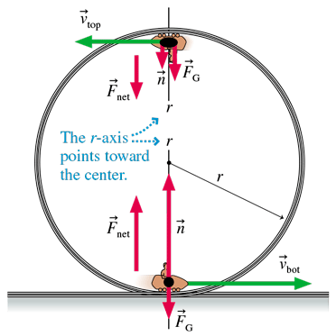

Chapter 8 Reading Notes
Dynamics Part II: Motion in Two Dimensions
Dynamics in Two Dimensions¶
Newton's Second Law, \(\vec a = \frac{\vec F_{net}}{m}\) does not differentiate between linear and 2D Motion and thus applies to both. Be very careful about the co-ordinate system chosen for each problem.
Projectile Motion & Drag¶
We can ignore the effects of drag for objects of higher-mass, but this effect cannot be ignored for objects of low-mass. $$a_{x} = - \frac{ϑ C_{d} A}{2m}v_{x}\sqrt{v_{x}2+v_{y}2} $$ $$a_{x} = -g - \frac{ϑ C_{d} A}{2m}v_{x}\sqrt{v_{x}2+v_{y}2} $$
Uniform Circular Motion¶
Dynamics: How forces cause motion.
Review¶
A particle in circular motion has a velocity tangent to the circle which is caused by the centripetal acceleration that points to the center. \(v = \omega r\) \(\rightarrow\) \(\vec a = \frac{v^2}{r} = \omega^2 r\)
X-Y Axis Bad¶
Use RTZ-axes, where: 1. r-axis (radial axis) points from the particle towards the center. 2. t-axis (tangential axis) is tangent to the circle (points counter-clockwise) 3. z-axis is perpendicular to the plane of motion
In the RTZ system, the following components of \(\vec v\) and \(\vec a\) are: - \(\vec v\): \(v_{r} = 0, v_{t} = \omega r, v_{z} = 0\) - \(\vec a\): \(a_{r} = \frac{v^2}{r} = \omega^2 r, a_{t} = 0, a_{z} = 0\) In UCM, velocity is only tangential and acceleration is only radial.
The RTZ Axis is not an inertial reference frame because it rotates as it moves with the particle (so we don't make measurements in this frame).
UCM Dynamics & Center-Force Model¶
\(\vec F_{net} = m \vec a = \frac{mv^2}{r}\) There is always a net Force towards the center. (Even at constant speed). Or in RTZ form: \(\((F_{net})_{r} = \Sigma F_{r} = ma_{r} = \frac{mv^2}{r} = m \omega^2 r\)\) \(\((F_{net})_{t} = \Sigma F_{t} = ma_{t} = 0\)\) $$(F_{net}){z} = \Sigma F{z} = ma_{z} = 0 $$
Circular Orbits¶
Objects in Orbit are just constantly in free-fall as they keep falling to the ground but the ground keeps curving away (they need to "catch up"). At a sufficient launch angle, they curve of trajectory and the curve of the spherical "planet" are parallel meaning that even constantly falling, the object doesn't get any closer to the ground (Orbit).
Gravity is the central force causing centripetal acceleration. \(\vec F_{G} = mg\) towards the center of the planet.
Satellites¶
Period of satellite orbit: \(T = \frac{2\pi r}{v_{orbit}} = 2\pi\sqrt{\frac{r}{g}}\) Because objects in orbit are in free-fall, they are weightless.
Circular Motion Reasoning¶
Centrifugal Force is Completely False¶
There is no such thing as a Centrifugal Force or a force that seems to push an object outside of a circle.
Bucket and Water¶

At the very bottom: \(\vec F_{c} = \vec n\), so \(n > F_{G}\) such that: \(n = mg + \frac{m(v_{bot})^2}{r}\) At the very top, both \(\vec n\) and \(F_{G}\) point towards the bottom. \(\Sigma F_{r} = n + mg = \frac {m(v_{top})^2}{r}\) such that \(n = \frac {m(v_{top})^2}{r} - mg\). At a low enough speed, the critical speed, there is a point where the cart has no contact with the cart and gravity itself is enough for the cart to complete the circle. That speed is calculated such that: $$ v_{c} = \sqrt{\frac{rmg}{m}} = \sqrt{rg} $$ If the cart is moving at a speed \(v < v_{c}\) , the calculated value for \(n\) would be negative, but realistically this means that the cart goes flying off.
Back to the bucket of water, so long as \(v \ge v_{c}\) there is a normal force of the bucket on the water enough to keep the water in the bucket.
Nonuniform Circular Motion¶
Circular motion with speed changes. The particle with changing speed also experiences a tangential force \((F_{net})_{t}\) so that there is an \(a_{t} = \frac {dv_{t}}{dt}\). This force is positive when ccw and negative when cw. \(\((F_{net})_{r} = \Sigma F_{r} = ma_{r} = \frac{mv^2}{r} = m \omega^2 r\)\) \(\((F_{net})_{t} = \Sigma F_{t} = ma_{t}\)\) $$(F_{net}){z} = \Sigma F{z} = ma_{z} = 0 $$ If \((F_{net})_{t}\) is constant, we can use constant-acceleration kinematics.